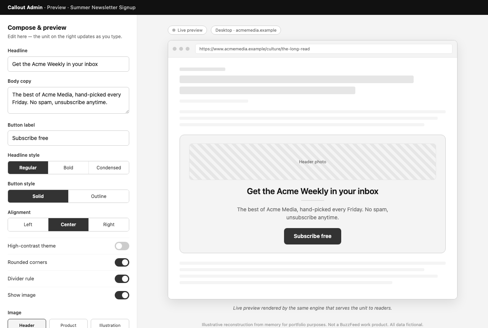
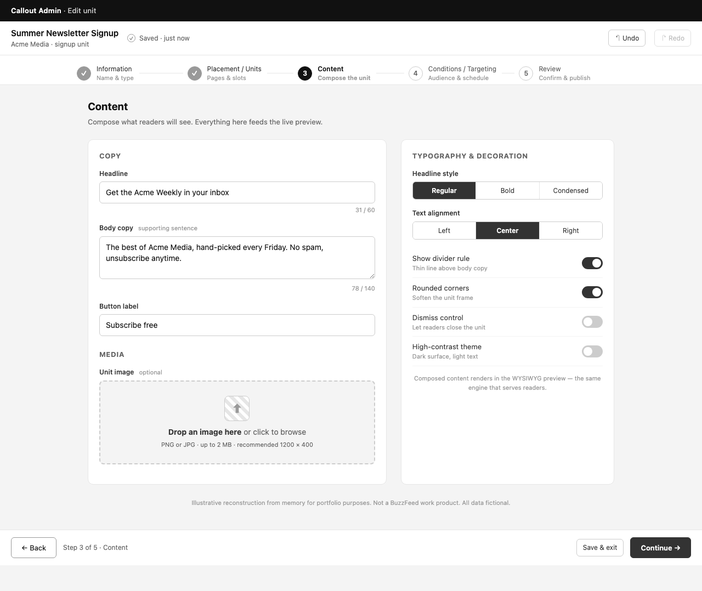
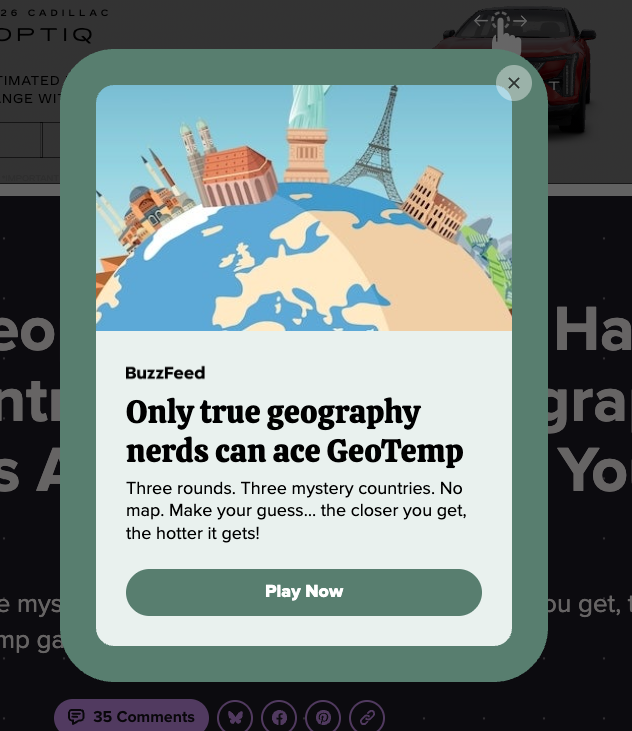

Built from scratch in Next.js: non-engineers compose audience-targeted promotions with a live preview driven by the same production renderer that serves readers.



Built from scratch in Next.js: non-engineers compose audience-targeted promotions with a live preview driven by the same production renderer that serves readers.
I built the Callout admin platform in Next.js from scratch as lead author. It is an operator tool for on-site promotions with a live preview, driven by the same production renderer that serves readers.
Operators compose a promotion in the admin and see it render in real time, both in-admin and in an on-site context, through the production renderer. The tool includes undo and redo, autosave, themes, media uploads, and audience and device targeting.
The platform let operators create and target on-site promotions themselves, with a preview that matches what ships. What I built is the system underneath: the admin, the campaign model, and the live preview.